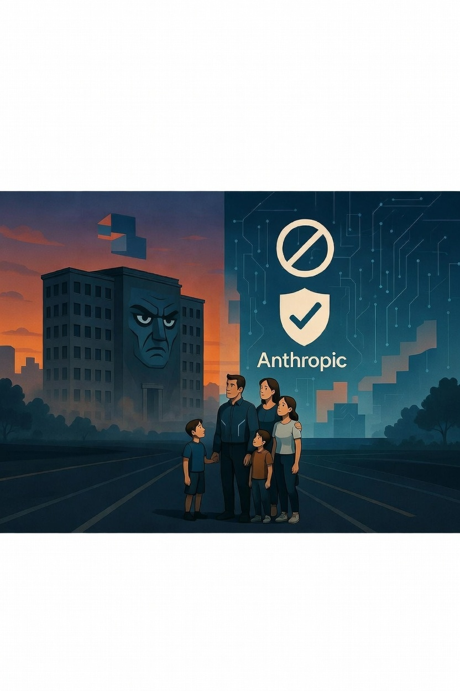

My wife and I have six kids. When I read the news this weekend that the Pentagon has officially labeled Anthropic (the company behind Claude) a "supply-chain risk," my first thought wasn’t about tech policy or government contracts. It was about my children and what kind of world they’re inheriting.
WHAT HAPPENED: The U.S. Department of Defense told Anthropic: "We want to use your AI for two things you’ve said no to — fully autonomous lethal weapons (no human in the loop) and mass surveillance." Anthropic said no. So the Pentagon formally labeled them a supply-chain risk — the kind of label usually reserved for foreign adversaries.
Here’s what actually happened, in plain English: Anthropic has strict rules against allowing their AI to be used for autonomous weapons without human oversight and for mass surveillance programs. The Pentagon wanted both. When Anthropic held firm, the DoD did something it has almost never done to an American company — it formally designated them a supply-chain risk. That means any defense contractor using Claude in their work could lose their government contracts.
This is the first time a major U.S. AI company has been hit with this.

Why This Matters to Regular Families (Not Just Tech People)
Most of us don’t work at the Pentagon or at Anthropic. So why should you care?
Because this fight is really about who gets to decide how the most powerful AI in the world is used — especially when it comes to life-and-death decisions.
If the government can force companies to loosen safety rules for military use, what happens when the next version of that same AI ends up in police departments, schools, or your kids’ future workplaces? If private companies can say "no" to certain uses, does that give them too much power over national security — or is it the only real check we have on runaway AI?
I’m a 55-year-old dad and ex-military veteran. I’ve seen what happens when powerful tools get used without proper safeguards. My biggest job is helping my kids (and yours) navigate this new world safely. That means we need honest conversations about where the guardrails are — and who gets to set them.
The Real Problem This Highlights
This isn’t just a fight between the Pentagon and one AI company. It’s the first very public clash over whether powerful AI should have hard ethical limits built in, or whether national security needs can override them.
"We’re not going to let Claude be used for killer robots without a human in control or for mass spying on Americans."
— Dario Amodei, CEO, Anthropic
The Pentagon said that stance interferes with their ability to do their job. Both sides have a point. But the bigger truth is this: we’re now at the stage where the most advanced AI systems are powerful enough that governments are treating them like critical infrastructure — like oil, chips, or electricity.
And that means the decisions being made right now will shape the world our kids grow up in.
What This Means for All of Us
As a father, this reinforces something I’ve been saying for a while: we can’t outsource our future to either Big Tech or the government alone. We need transparency, real oversight, and companies that are willing to draw ethical lines — even when it costs them.
The good news? This fight is happening in public. We’re seeing it. We can talk about it. We can push for better answers.
My job at TrainingRun.ai is simple: cut through the hype, explain these stories in plain English, and help regular families understand what’s actually at stake. Because the more we all understand, the better decisions we can make — for our kids and for the country.
What do you think? Should companies like Anthropic be allowed to say "no" to certain military uses, even if it creates tension with the government? Or does national security have to come first?
I read every reply. This stuff matters too much to stay quiet about.
Read the original reporting: The Pentagon formally labels Anthropic a supply-chain risk
Read the Full Article →What do you think? Drop a reply on X. We read every one.
— David Solomon, TrainingRun.AI